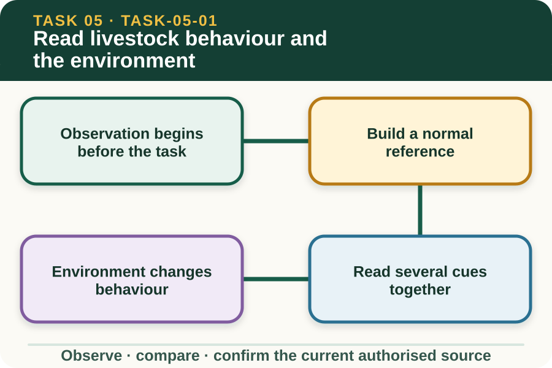
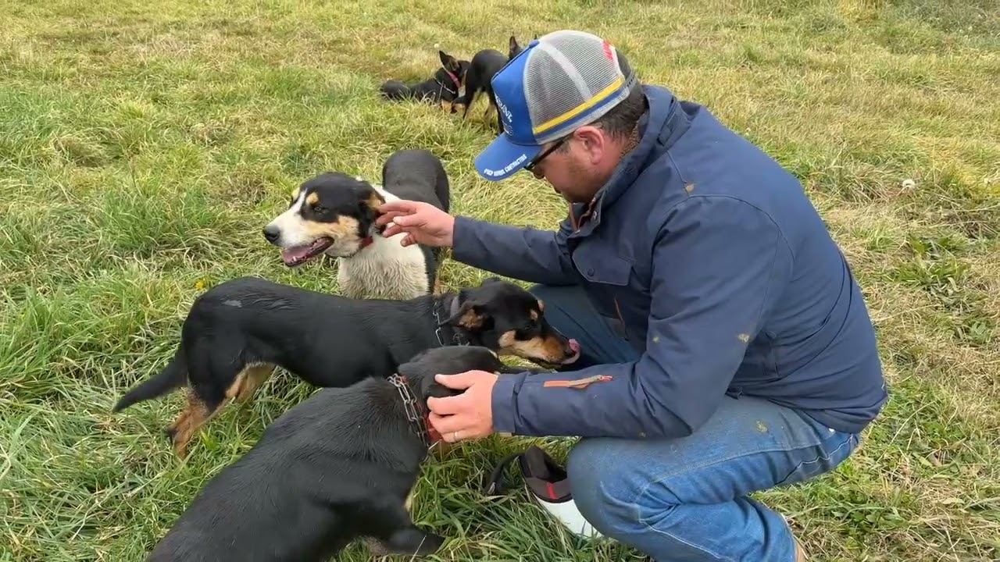

Learning purpose
Compare normal cues, stress cues, environmental influences and safe observation positions.
Task 5 · Lesson 1 of 4
Compare normal cues, stress cues, environmental influences and safe observation positions.
Learning purpose
Compare normal cues, stress cues, environmental influences and safe observation positions.
Success criteria
Learning boundary
Supplementary learning and formative practice only. Current RTO assessment, local procedures and authorised supervision control real work.

Livestock observation starts from a position and distance approved for the workplace, before anyone attempts to influence movement. The observer scans the group, the surroundings and the planned work area while staying within the confirmed role.
A useful first impression considers distribution, attention, movement and interaction across the group. One animal standing apart or repeated changes across several animals may justify closer authorised review, but neither pattern provides a diagnosis.
The word normal is meaningful only when it is connected to a known group, time and situation. Resting, feeding, weather, unfamiliar people and routine workplace activity can all influence what an observer sees.
Compare current cues with authorised baseline information, earlier records and supervisor knowledge. Describe the difference in plain terms rather than labelling behaviour as good, bad, stubborn or sick without sufficient evidence.
One cue rarely tells the whole story. Posture, pace, direction of attention, group spacing, vocalisation and response to the environment should be considered together and over a suitable observation period.
Patterns are stronger than isolated impressions. If the whole group changes direction after a sudden noise, that context matters; if one animal continues to move differently after the group settles, that difference should be reported objectively.
Noise, glare, shadows, surfaces, gates, weather, nearby vehicles, people and other animals can change attention or movement. Recording these conditions helps a supervisor interpret the observation and review the plan.
The learner does not remove, rearrange or enter facilities simply because an environmental feature seems relevant. Any change to access, equipment or the handling area requires the current workplace process and an authorised decision.
Fictional worked example
Observed evidence: On fictional Riverbend Farm, Maya watches a group from the teacher-approved observation point and notes that most animals continue facing the feed area while one repeatedly turns towards a flapping sheet beside the lane. Decision and reason: Maya does not label the animal aggressive or attempt to move it because the visible cue and environmental change need authorised interpretation. Safe action: She reports the animal identifier, repeated head turns, location and flapping material. Result: The supervisor reviews the scene and confirms the next step. Next check or record: Maya records only the observable pattern and the direction received.
Stress and discomfort are important animal-welfare concerns, yet those words should not replace a description. A report is more useful when it states the repeated behaviour, duration, context and difference from the expected pattern.
When a cue may affect animal or handler safety, follow the confirmed stop-and-report boundary. The website cannot decide whether the cue is normal for a species or prescribe a movement response.
A concise livestock report identifies the group or animal, observation time, location, visible behaviour, relevant environmental condition and who was notified. It separates direct evidence from possible explanations and missing information.
Privacy-safe classroom practice uses fictional property and worker details. A saved response supports learning only and does not replace an enterprise record, supervisor decision, authorised practical demonstration or formal assessment.

External media loads only after you choose it.
Source-linked video
Why watch: Look for observable cues that mean a team should pause and reassess rather than push on.
Watch for: What change in animal behaviour or the work environment signals that people should pause and reassess?
Formative practice
Each option explains the consequence. These answers save only on this device.
Written application
Apply and keep a learning record
From a teacher-approved image or fictional scene, record group pattern, one individual difference, two environmental features and the question you would refer to a supervisor. Do not enter a livestock area or propose a movement technique.
Learning record: A privacy-safe supplementary observation grid that separates visible cues, context and questions requiring authorised review.
Lesson responses and the activity are formative learning only. Formal sufficiency and competence remain with the current RTO process.
Source basis: AHCLSK223 Release 1 and AHCLSK224 Release 1 requirements to observe livestock behaviour, report abnormalities and work under supervisor instructions, supported by the authorised livestock focus-area resource. Current species guidance, local facilities, workplace procedures and teacher supervision control real observation and handling.